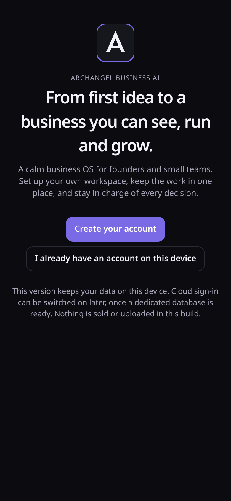
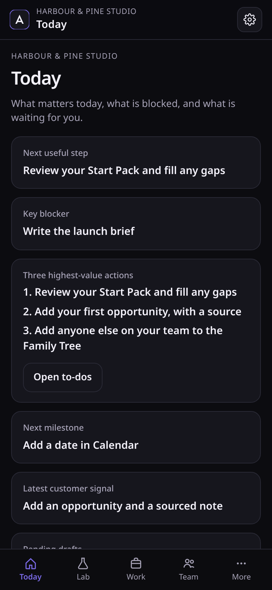
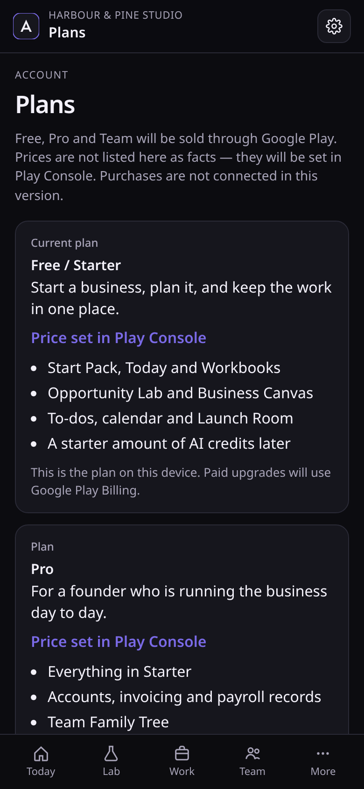

1
Start Pack
Tell it the working name, what you want to build, who it may help, and the outcome you want in thirty days. Ultra Intelligence drafts a pack you can edit. Everything in that draft is labelled as a draft.
Archangel Business AI
A calm business OS for solo founders, creators and small teams. Ultra Intelligence helps you plan and execute. You remain the boss.


The promise
Most people do not need another noisy dashboard. They need a guide that does not pretend to be certain. Archangel Business AI takes you from a first sketch to a business you can actually run. It is useful even before there is revenue. It will not invent interviews, testimonials, demand or sales.
How it works
Tell it the working name, what you want to build, who it may help, and the outcome you want in thirty days. Ultra Intelligence drafts a pack you can edit. Everything in that draft is labelled as a draft.
The Opportunity Lab turns a raw idea into a structured experiment: the customer, the alternatives, the assumptions, the evidence, and a low-cost test. “What would change our mind?” is required.
Offers, customers, delivery, money scenarios and risks sit together, so the business has one truth, not five conflicting documents.
Workbooks save what you decide. Today shows the next useful step. Launch Room holds the checklist — and nothing goes out until you confirm it.
When you have people to pay and books to keep, accounts, invoicing, the Team Family Tree and payroll live in the same workspace. Scenarios stay scenarios. Books stay books.
Features
It is not a bank, a law firm, or a replacement for qualified advice. It is the place you keep the work, and the guide that helps you take the next useful step.
Save your work as you go. Decisions, drafts and earlier versions stay in one place, labelled until you accept them, so you can always see what you actually decided.
The memory of your business. It keeps the canvas, workbooks, decisions and people in one place, so you can ask about your own records and get an answer that is actually yours — not a guess.
An interactive chart of everyone in the business: employees, contractors, advisers and AI bots. Bots are always labelled AI, and they are never paid through payroll.
Posted books stay separate from planning scenarios. The app can prepare Australian records such as GST, BAS, super and STP, but a person still checks them — often a registered tax or BAS agent — before anything is lodged.
The team
Ultra Intelligence is the central guide. It is not an invisible executive. Every bot shows its job, its sources, what it is not allowed to do, and a review state. Pause all bots is always available.
Your central guide. It helps you get your bearings, join related work together, and propose the next useful step. It is not an invisible executive.
The memory of your business. Ask about your own records and get an answer that is actually yours.
Turns the context you select into an editable next-step plan.
Writes sourced research summaries and points out the gaps. It will not invent sources.
Drafts interview guides and organises the feedback you have already collected. It never fabricates responses.
Proposes offer options and the trade-offs between them. It will not tell you a price is “correct”.
Drafts brand material, web copy, content ideas and creative briefs, ready for you to edit.
Produces roadmaps, specifications, acceptance criteria and dependency maps.
Prepares follow-up and proposal drafts from records you select. Sending always stays manual.
Surfaces blockers, missing ownership, overdue work and recurring operational gaps.
Calculates the low, base and high figures you enter, and highlights the inputs that are still missing. These are planning scenarios, not your books.
Lists unverified assumptions, missing approvals and unresolved risks.
Helps you keep the posted accounts, invoices and GST records tidy, and keeps them clearly separate from planning scenarios.
Helps you prepare pay runs, super and STP records for the people you employ. A person still checks a lodgement before it goes in.
Hard rules
Plans
Credits come with the plan you choose and are only spent on AI work you run. Pricing will be published with the public launch — it is not listed here yet.
Start a business, plan it, and keep the work in one place.
Price published at launch
For a founder who is running the business day to day.
Price published at launch
For a small team sharing one business workspace.
Price published at launch

FAQ
Solo founders, creators and small teams who want to start, plan or already run a small business — and who want reviewable AI, not an autopilot.
No. The app is not a bank, a law firm, or a substitute for a registered tax or BAS agent. It can prepare Australian records such as GST, BAS, super and STP. A person still checks them before they are lodged.
In version 0.2, your account and business workspace stay on your device. You can export a JSON copy or delete your data from Settings. Cloud sign-in can be switched on later, and will be described in an updated privacy policy first.
Not in the current tester build. The guide and the bot team are in the product, and the chat space is there, but a live model is not connected yet. Drafts will stay labelled, and nothing will be sent or published without your confirmation, when that connection arrives.
Prices are not listed yet. They will be published with the public launch and set in the Play Console for a Play Store listing. Credits are only for service use and cannot be cashed out.
Yes. You set up your own account, then one or more businesses, and you can switch between them in the app.
Use the form below. It opens an email to TopazArchangel@gmail.com. There is no sign-up server on this website.
Early testers
This is the workspace that helps you see it clearly, plan the next step, and keep going without handing over the steering wheel. The public Play Store listing is still ahead. If you would like to test the app, send a note — the button opens your email, addressed to TopazArchangel@gmail.com. Nothing is submitted to a website server.